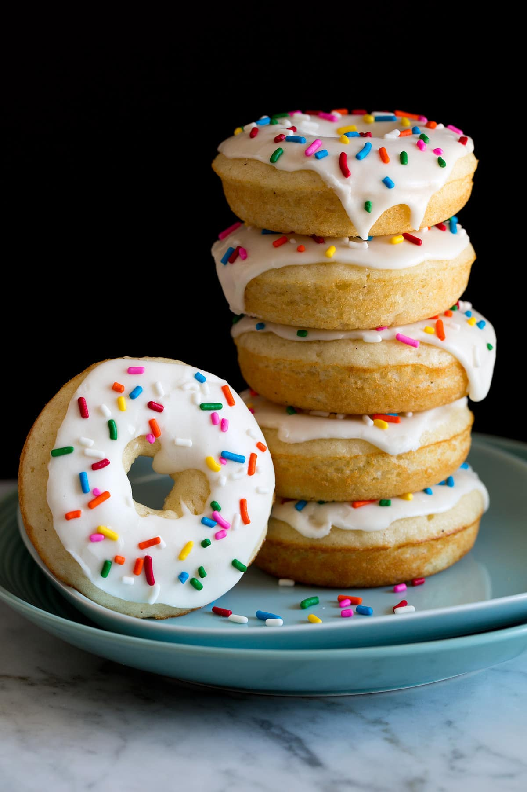

Home
Baked Donuts

Homemade Baked Donut Recipe
an irresistible oven baked donut with a very similar flavor to fried cake
donut but without all the extra mess and deep frying hassle! They are
perfectly tender and sweet and always temptingly delicious!
Donuts are such a classic, favorite treat but making the traditional fried
donuts from scratch can be a bit time consuming. That’s where these baked
donuts come in! They perfectly satisfy those donut cravings and they are
easily customizable (by adding mix-ins or flavorings or in trying
different types of glaze). Kids and adults alike love them for a fun
weekend breakfast and they could easily become a birthday morning
tradition. You get a soft and tender cake-like crumb, a sweet and simple
vanilla glaze and the sprinkles are the perfect finishing touch. What’s
not to love about these inviting and nostalgic donuts? They’re such a fun
baking project!
Baked Donut Recipe Ingredients:
-
All-purpose flour: I prefer unbleached all-purpose flour though bleached
will work as well.
-
Baking powder and baking soda: The combination assists in the the
perfect rise.
- Salt: Don’t forget it or the donuts will taste flat.
-
Nutmeg: You can adjust this amount to taste. 1/4 tsp is right about what
I like but for milder flavor you can reduce to 1/8 tsp or even omit. It
just offers a little extra something
-
Unsalted butter: In a pinch salted butter can be used, just reduce added
salt to 1/8 tsp.
- Vegetable oil: This type of fat makes for a moister donut.
-
Granulated sugar and powdered sugar: Two types of sweeteners are needed
here, one for the batter and one for the glaze. Powdered sugar is a must
for a smooth glaze, granulated sugar is too gritty.
-
Buttermilk and milk: Buttermilk is used in the donut batter for more
flavor while milk is used in the glaze. Any fat percentage of milk will
work here since rich butter is also included in the glaze.
-
Eggs: These help bind ingredients and fluffy up the donuts. If you need
a substitute I’d suggest reading up on this link here.
- Vanilla extract: A key ingredient for perfect background flavor.
How to Make Baked Donuts:
-
Heat oven, prepare donut pans: Preheat oven to 425 degrees. Spray 12
cavities of donut pans (I have these) with non-stick cooking spray, set
aside.
-
Whisk dry ingredients: In a medium mixing bowl whisk together flour,
baking powder, baking soda, salt and nutmeg, set aside.
-
Separately whisk wet ingredients and sweetener: In a separate large
mixing bowl whisk together 4 Tbsp butter, the vegetable oil and sugar.
Mix in eggs and vanilla extract.
-
Combine mixtures in alterations: Whisk in 1/3 of the flour mixture,
blending just to combined, mix in 1/2 the buttermilk just to combined,
followed by 1/3 of the flour mixture, 1/2 the buttermilk, then last 1/3
of the flour mixture. Batter should be slightly lumpy, don’t over-mix.
-
Pipe into prepare pans: Pour mixture into a piping bag (fitted with a
large round tip if preferred). Pipe into donut cavities filling about
1/4-inch to the top.
-
Bake: Bake in preheated oven until toothpick inserted into center comes
out clean, about 7 – 8 minutes.
-
Cool: Let cool in pan for a few minutes then invert onto wire racks to
cool.
How to Make Cake Donut Glaze:
-
Mix all glaze ingredients in a bowl: In a small mixing bowl whisk
together powdered sugar, butter, milk and vanilla.
-
Thin as needed: Thin with more milk as needed to reach a nicely
spreadable consistency. Alternately if it seems too thin add a little
more powdered sugar.
-
Spread glaze over prepared donuts: Spoon and spread mixture over donuts,
decorate with sprinkles right away if using.
-
Let set: Let glaze set at room temperature or enjoy them a little stick
if you can’t wait!
Variations:
- Add fresh blueberries.
- Mix in chopped nuts.
-
Try other extracts such as almond extract for a birthday cake-like
flavor.
-
Whisk in other spices along with the nutmeg (cinnamon, ginger, cloves,
allspices).
-
Use half brown sugar in place of granulated sugar for additional flavor.
-
Bake as mini donuts, or even mini muffins if you are without a donut
pan.
-
Finish with a different glaze (chocolate, strawberry, lemon, etc.).
-
Decorate with sprinkles or other finishes such as shredded coconut.
-
Brush finished donuts with a little melted butter and then dip in
cinnamon sugar for a churro style flavor.